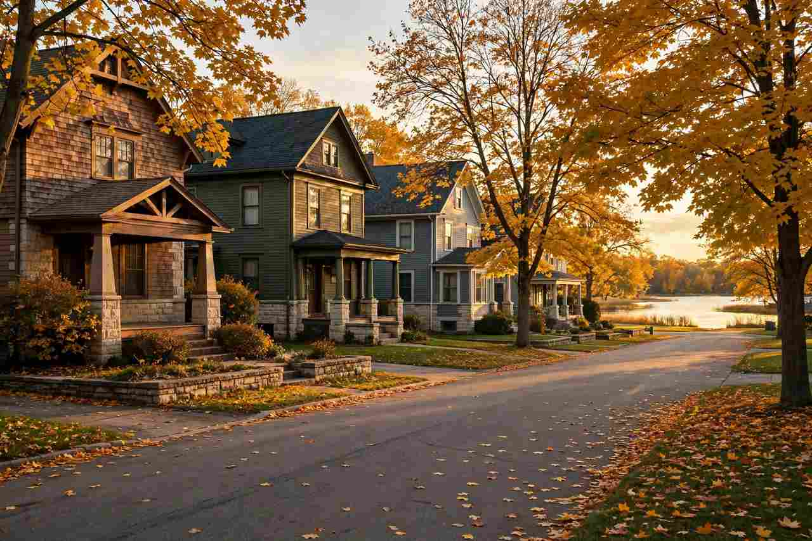

Rodent Control · Huntingburg, IN
Fast Rodent Control in Huntingburg, IN
Murvo delivers same-day rodent control in Huntingburg for rats and mice in attics, walls, kitchens, and crawl spaces. Local crews start with a thorough inspection, then remove, exclude, and monitor until the problem is solved. You approve one flat-rate price in writing before any work starts, and every job carries a written guarantee across Dubois County. Crews route daily across Dubois County - 2 ZIP codes covered, including 47545, 47542.
24/7Availability
2ZIP codes covered
Same-dayResponse
Licensed · Upfront options · Written guarantees · Fully insured
Huntingburg at a glance
Local Rodent Control for Huntingburg, IN.
Dubois County
Countysouthwest Indiana
RegionEvansville · 38 mi
Nearest metro110 miles southwest of Indianapolis
From Indianapolis2
ZIP codes covered Service by service in Huntingburg
Rodent Control Services Available in Huntingburg
The full range of residential and commercial rodent services in Huntingburg and Dubois County - built around the species and housing here, from emergency removal and same-day control to exclusion, proofing, trapping, cleanup, and damage repair. Every service below is quoted flat-rate in writing and backed by our workmanship guarantee.
- 01Rodent Control↗
- 02Rodent Inspection↗
- 03Rodent Removal↗
- 04Rodent Exclusion↗
- 05Rodent Proofing↗
- 06Rat Control↗
- 07Mice Control↗
- 08Mouse Removal↗
- 09Rat Removal↗
- 10Rodent Trapping↗
- 11Rodent Baiting↗
- 12Rodenticide Application↗
- 13Attic Rodent Removal↗
- 14Crawl Space Rodent Removal↗
- 15Wall Rodent Removal↗
- 16Kitchen Rodent Control↗
- 17Garage Rodent Control↗
- 18Commercial Rodent Control↗
- 19Residential Rodent Control↗
- 20Emergency Rodent Removal↗
- 21Same-Day Rodent Control↗
- 22Rodent Damage Repair↗
- 23Rodent Waste Cleanup↗
- 24Rodent Disinfection↗
- 25Rodent Odor Removal↗
- 26Dead Rodent Removal↗
- 27Rodent Dropping Cleanup↗
- 28Rodent Exclusion for Roofs↗
- 29Rodent Exclusion for Vents↗
- 30Rodent Exclusion for Chimneys↗
Rodent Control in Huntingburg
Rodent Control in Huntingburg
What does a finished job actually look like? No new droppings, no nighttime movement, and no open route back inside. That is the standard Murvo works toward in Huntingburg, with background-checked technicians, a written workmanship guarantee, and follow-up checks that confirm the quiet is real rather than temporary luck.
Homeowners in Huntingburg call Murvo for rodent control because the problem here is specific: Norway rat (Rattus norvegicus) pressure around vintage duplexes and stone homes, brick bungalows, older single-family homes, and farm and rural properties, tight access at basement foundations, alley-facing garage doors, sewer laterals, and gaps around utility lines and sills, and activity that follows the local season. Our Dubois County crews diagnose the real source before recommending work, explain the options in plain language, and quote one flat rate in writing. Across Huntingburg - including Bretzville, Holland - every visit is backed by licensed, insured technicians and our written workmanship guarantee. Homes near Jasper tend to show activity first in Huntingburg, which is why inspections start with basement foundations, alley-facing garage doors, sewer laterals, and gaps around utility lines and sills.
Consider how a visit unfolds. Inside, attic and crawl-space evidence shapes the trapping plan, which is adjusted visit by visit as numbers change. Cleanup guidance covers contaminated areas safely, and exclusion work closes the route permanently. Throughout, photographs and written notes keep you informed, so progress is something you can see and verify rather than something you are asked to trust. The technician walks the exterior before touching anything indoors, noting gaps, rub marks, and food sources. Photographs taken at the start make those later comparisons honest, because memory alone tends to blur the details.
After you book, we confirm a time window and your background-checked technician arrives in a marked vehicle with identification. Once approved, trapping and sealing begin, and follow-up visits are scheduled before we leave, with the guarantee in writing. They walk the property with you, inspect inside and out, and explain what they find with photos. You receive a flat-rate written quote before any work starts. No work begins without your approval.
Need help quickly in Huntingburg? Call any time — the emergency line is staffed 24/7, and same-day rodent control appointments are available in most areas. We inspect first, explain the plan in plain language, and put the flat rate in writing before work starts. In Dubois County, activity follows the local season, so timing the work matters as much as the method.
Murvo does not quote rodent control sight unseen, because species, activity, and sealing needs change the work involved. After inspection you get one flat-rate written quote, and that is the figure you pay. As national context only, Angi's 2026 figures put rat and mouse removal and control at an average of $396, with a typical range of $189 to $655 — a benchmark, not a Murvo price.
Rodent Inspection in Huntingburg
Rodent Inspection in Huntingburg
Most Huntingburg inspections start with uncertainty: a noise, a smell, a few droppings that might be old. Murvo turns that uncertainty into a written record. A rodent inspection checks attic, crawl space, roofline, and foundation, photographs the evidence, and ends with a flat-rate written quote for anything worth fixing.
Homeowners in Huntingburg call Murvo for rodent inspection because the problem here is specific: Norway rat (Rattus norvegicus) pressure around vintage duplexes and stone homes, brick bungalows, older single-family homes, and farm and rural properties, tight access at basement foundations, alley-facing garage doors, sewer laterals, and gaps around utility lines and sills, and activity that follows the local season. Our Dubois County crews diagnose the real source before recommending work, explain the options in plain language, and quote one flat rate in writing. Across Huntingburg - including Bretzville, Holland - every visit is backed by licensed, insured technicians and our written workmanship guarantee. Coverage for rodent inspection spans 2 ZIP codes in Dubois County, including 47545, 47542.
The inspection starts outside, where we check the foundation, siding, pipe penetrations, garage doors, and roof junctions, because mice can squeeze through a gap the width of a pencil. Inside, we examine the attic, crawl space, insulation, stored items, and food areas for droppings, nests, rub marks, and gnaw damage. We also note where vintage duplexes and stone homes, brick bungalows, older single-family homes, and farm and rural properties create hidden routes through basement foundations, alley-facing garage doors, sewer laterals, and gaps around utility lines and sills. Every finding is photographed and explained, and recommendations are marked urgent or preventive so you can stage the work sensibly.
To book, call any time; urgent inspections are answered 24/7. We agree a window, note where you have noticed signs, and confirm access to the attic and crawl space. On the day, your technician works through the property methodically, reviews photographs with you on site, and leaves written findings plus any quote before departing. You keep the report either way, and it remains useful for staging repairs later or comparing conditions at a future seasonal check.
You do not have to wait days for answers in Huntingburg. Same-day rodent inspection appointments are available in most areas, urgent calls are taken 24/7, and most home inspections take under an hour. You finish the visit with photos, written findings, and flat-rate pricing for anything we recommend. The written quote for your Huntingburg property will spell out exactly which of these applies before any work starts.
Nationally, a professional rodent inspection typically runs $100 to $200 according to Angi's 2026 data, and it is often credited toward the job if you proceed. Murvo confirms your exact rodent inspection price before the visit and quotes any follow-up work as a flat rate in writing after inspection, so the figure you approve is the figure you pay, with no hourly billing.
Rodent Removal in Huntingburg
Rodent Removal in Huntingburg
Most Huntingburg removal calls start after a homeowner has already tried a store-bought trap and caught nothing. The difference is placement and persistence. Murvo locates nests first, sets traps on confirmed routes for Norway rat (Rattus norvegicus) and House mouse (Mus musculus), returns until catches end, and quotes the whole program as one flat-rate written quote.
Homeowners in Huntingburg call Murvo for rodent removal because the problem here is specific: Norway rat (Rattus norvegicus) pressure around vintage duplexes and stone homes, brick bungalows, older single-family homes, and farm and rural properties, tight access at basement foundations, alley-facing garage doors, sewer laterals, and gaps around utility lines and sills, and activity that follows the local season. Our Dubois County crews diagnose the real source before recommending work, explain the options in plain language, and quote one flat rate in writing. Across Huntingburg - including Bretzville, Holland - every visit is backed by licensed, insured technicians and our written workmanship guarantee. In Huntingburg, rodent removal calls most often involve vintage duplexes and stone homes, brick bungalows, older single-family homes, and farm and rural properties, where basement foundations, alley-facing garage doors, sewer laterals, and gaps around utility lines and sills decide whether the fix holds.
Removal here is measured in records, not impressions. When the log stays empty across repeat checks, removal is genuinely finished. Sealing recommendations follow immediately, because a clear home with open gaps will not stay clear for long in Huntingburg. Each trap is numbered, mapped, and checked on schedule, and every catch is logged against its location. That log shows where activity concentrates, where it is fading, and where a placement needs to move. That record also protects you, because it shows exactly when activity ended rather than when visits simply stopped.
Same-day removal appointments are available across much of Huntingburg for active infestations. Every stage is explained in plain language as work proceeds. After a quick inspection, your background-checked technician explains the trapping plan and gives you a flat-rate written quote; work starts only with your approval. Follow-up checks are booked before we leave, contaminated areas are made safe, and monitoring confirms the property is clear before we sign off. You keep copies of all visit records.
When rodents are active indoors in Huntingburg, waiting rarely helps. Rodent removal can usually start the same day you call, our line answers 24/7 for a rodent loose in a living area, and the first visit sets traps straight away. Scheduled returns then clear and reset them until monitoring shows the home is clear. Murvo's Huntingburg crews explain the finding either way, and the flat-rate quote leaves the decision with you.
How many animals are active, which species they are, and how much sealing follows removal all shape the price, so we assess first and then quote one flat rate in writing. Angi's 2026 national context — an average of $396 and a typical $189 to $655 range for rat and mouse removal — is provided for comparison only; your written quote is the exact Murvo figure.
Rodent Exclusion in Huntingburg
Rodent Exclusion in Huntingburg
Most Huntingburg exclusion jobs start with a simple question: where exactly are they getting in? Murvo answers it opening by opening, then seals each one with material matched to its size and location. You see the full list, and one flat-rate written quote, before a single gap gets closed.
In Huntingburg, rodent exclusion is not a generic spray-and-go service. Rodents exploit basement foundations, alley-facing garage doors, sewer laterals, and gaps around utility lines and sills in vintage duplexes and stone homes, brick bungalows, older single-family homes, and farm and rural properties, and a fix that ignores those routes does not last. Murvo's Huntingburg team inspects first, shows you the evidence - droppings, gnaw marks, entry gaps - and then lays out the work with a flat-rate written quote. We serve all of Dubois County from Huntingburg, including Bretzville, Holland, and every job is covered by our written workmanship guarantee. The Huntingburg crews who handle rodent exclusion also handle the follow-through - proofing, cleanup, and monitoring - so one visit can close the whole problem.
Before any sealing, active rodents are cleared with trapping so nothing is trapped inside the structure. Because exclusion removes the route in rather than relying on chemicals, it reduces the need for rodenticides and supports pet-safe, no-poison control. A final walkthrough shows you every protected opening, and monitoring checks confirm no new activity appears at sealed points. We then work opening by opening around basement foundations, alley-facing garage doors, sewer laterals, and gaps around utility lines and sills, rooflines, and utility penetrations, photographing each finished seal. Every seal is listed on your written guarantee.
The visit starts with a check that no animals remain inside, using trapping and monitoring where needed. A later re-check confirms the seals are holding and activity has stopped. Once clear, your background-checked crew seals the agreed openings with chew-resistant materials, working cleanly around your home. Before leaving, we show you each finished seal, explain how it was protected, and confirm the guarantee paperwork. You approve the finished work before we close the job.
Rodent exclusion in Huntingburg usually starts with a survey visit we can often schedule the same day you call. Sealing itself is booked as soon as any active animals are cleared, because nothing is sealed inside. Most homes are fully sealed within days, not weeks, and urgent entry points near wiring or food areas are prioritized first. That is also why Murvo pairs removal with exclusion in Huntingburg - treating the animal without closing basement foundations, alley-facing garage doors, sewer laterals, and gaps around utility lines and sills rarely lasts.
For national context, Angi's 2026 data puts basic exclusion at $200 to $600, depending on access and the number of openings. That is a benchmark, not a Murvo price. After surveying your Huntingburg home, we list every opening that needs sealing and quote one flat rate in writing, so you pay for the work your property actually needs and nothing more.
Rodent Proofing in Huntingburg
Rodent Proofing in Huntingburg
Most Huntingburg proofing clients have not seen a rodent yet, and that is exactly the point. A rodent proofing survey finds the gaps, screens, and habits that would invite Norway rat (Rattus norvegicus) and House mouse (Mus musculus) in later, then fixes them in priority order under one flat-rate written quote you approve first.
When you need rodent proofing in Huntingburg, the job starts with what is actually happening in your part of Dubois County. Murvo crews work Huntingburg every week, so they know how Norway rat (Rattus norvegicus) and House mouse (Mus musculus) behave around vintage duplexes and stone homes, brick bungalows, older single-family homes, and farm and rural properties here - and where they get in: basement foundations, alley-facing garage doors, sewer laterals, and gaps around utility lines and sills. We arrive equipped for the full job, confirm the flat rate in writing before work begins, and cover the whole Huntingburg area, including Bretzville, Holland. No call-center runaround and no open-ended hourly billing - just a local crew, a clear plan, and a written quote you approve first. Seasonal timing matters for rodent proofing in Huntingburg: rodents surge in Huntingburg from October through April.
Proofing starts with a whole-property assessment inside and out, from overhanging branches and cluttered garages to unsealed vents and gaps under doors. The plan typically combines structural sealing of utility entries and foundation cracks with mesh screening on vents, chimneys, and rooflines, plus door sweeps where light shows underneath. We also address attractants: securing pet food and bird seed storage, trimming vegetation away from walls, and clearing harborage. Every item is prioritized so essential work happens first. Photos show each weakness we find.
Arrange a survey at a time that suits you; there is no emergency, so scheduling stays relaxed. You then receive a written quote separating essential work from optional improvements, and nothing proceeds without your say-so. Your technician walks every side of the property with you, photographs weak points, and talks through the plan in plain language. Staging the work is fine; essential sealing can proceed first while optional improvements wait until a season or budget that suits you better.
Rodent proofing is preventive, so there is rarely a rush, but surveys in Huntingburg can often be arranged the same day you call, and always within a few days. Most proofing work is completed in a single visit once you approve the plan, and booking before colder weather gives your home protection ahead of the seasonal rush indoors. In Dubois County, most cases involve the Norway rat (Rattus norvegicus) and the House mouse (Mus musculus), so the inspection focuses on their routes first.
We survey your Huntingburg property first, separate the quick wins you can handle yourself from the specialist sealing, and quote the professional work as one flat rate in writing so spending can be staged. Angi's 2026 national context puts exclusion, the core of proofing, at $200 to $600 for basic work — a benchmark only, not a Murvo price.
Rat Control in Huntingburg
Rat Control in Huntingburg
What separates control from a temporary lull? Monitoring that continues after the last catch. Murvo keeps checking until routes stay quiet, removes trapped rats hygienically, and finishes with exclusion so replacements cannot follow the same path. Licensed, insured technicians document every visit, and urgent calls are answered 24/7.
Homeowners in Huntingburg call Murvo for rat control because the problem here is specific: Norway rat (Rattus norvegicus) pressure around vintage duplexes and stone homes, brick bungalows, older single-family homes, and farm and rural properties, tight access at basement foundations, alley-facing garage doors, sewer laterals, and gaps around utility lines and sills, and activity that follows the local season. Our Dubois County crews diagnose the real source before recommending work, explain the options in plain language, and quote one flat rate in writing. Across Huntingburg - including Bretzville, Holland - every visit is backed by licensed, insured technicians and our written workmanship guarantee. Homes near Jasper tend to show activity first in Huntingburg, which is why inspections start with basement foundations, alley-facing garage doors, sewer laterals, and gaps around utility lines and sills.
Wary rats punish rushed trapping, so the program begins with patience. Catches are recorded by location, giving a clear picture of colony size and movement. Exclusion follows at rooflines and entry points, and monitoring devices remain in place afterwards to verify that quiet routes have genuinely stayed quiet. Unset traps are placed on confirmed runways and pre-baited until feeding becomes confident and regular. Only then are traps set, checked frequently, and repositioned as the pattern shifts. Counts matter here, because a falling catch trend tells a different story from a single lucky night.
Call for rat control in Huntingburg and we will book an inspection, often the same day for active problems. Trapping visits then run on a set schedule, with placements adjusted as activity shifts. The job closes only when monitoring confirms rats are gone and exclusion is complete. Your technician maps routes and harborage, explains the trapping plan, and gives you a flat-rate written quote before any work begins. Your guarantee is confirmed in writing.
Rats do not wait, and neither do we: rat control in Huntingburg can usually start with a same-day inspection, and urgent calls are answered 24/7. Pre-baiting begins on the first visit once you approve the written quote, traps are set as soon as rats are feeding confidently, and scheduled checks keep the program moving until activity stops. A Huntingburg inspection confirms it on site - dropping size, gnaw marks, and entry points tell the story quickly.
Rat work varies with species, colony size, and how many entry points need sealing, so Murvo inspects first and quotes one flat rate in writing. For national context only, Angi's 2026 data averages rat control and removal at $396, typically $189 to $655. That benchmark is not a Murvo price; the written quote for your Huntingburg home is the exact figure you pay.
Mice Control in Huntingburg
Mice Control in Huntingburg
Small rice-like droppings, shredded nesting material, and faint scratching after dark are the classic signs mice have moved into a Huntingburg home. Murvo's mice control surveys activity and entry points, traps in clusters along the routes mice travel nightly, and seals gaps as small as a pencil width. One flat-rate written quote covers the program before work begins.
When you need mice control in Huntingburg, the job starts with what is actually happening in your part of Dubois County. Murvo crews work Huntingburg every week, so they know how Norway rat (Rattus norvegicus) and House mouse (Mus musculus) behave around vintage duplexes and stone homes, brick bungalows, older single-family homes, and farm and rural properties here - and where they get in: basement foundations, alley-facing garage doors, sewer laterals, and gaps around utility lines and sills. We arrive equipped for the full job, confirm the flat rate in writing before work begins, and cover the whole Huntingburg area, including Bretzville, Holland. No call-center runaround and no open-ended hourly billing - just a local crew, a clear plan, and a written quote you approve first. Coverage for mice control spans 2 ZIP codes in Dubois County, including 47545, 47542.
The program starts with an activity and entry-point survey covering kitchens, attics, wall voids, and under-floor spaces. Traps are placed in clusters along baseboards, behind appliances, and in attic voids, because mice travel the same short routes nightly. Technicians return to clear and reset traps and track numbers until they reach zero. We then seal pencil-width gaps, including the overlooked routes behind baseboards and where pipes and wires pass through floors, and advise on cleaning scent-marked surfaces. Follow-up monitoring confirms the result before sign-off.
Book mice control in Huntingburg with one call, and same-day visits are available in many areas. Your technician surveys the kitchen, attic, and voids, explains where mice are traveling, and gives you a flat-rate written quote before setting a single trap. Trap checks are scheduled before we leave, and a follow-up visit confirms activity has stopped before the job is signed off. Everything is explained in plain language for your household.
Mice multiply fast, so mice control in Huntingburg is built to start fast too: a survey can often be arranged the same day you call, with traps set on that first visit once the quote is approved. Because mice investigate new objects quickly, catches usually begin soon after, and check visits follow until a final confirmation shows activity has stopped. Around Huntingburg, vintage duplexes and stone homes, brick bungalows, older single-family homes, and farm and rural properties give rodents the most cover, which is why entry points get checked before traps are set.
Mouse work is priced by the number of rooms affected and the amount of sealing involved, so Murvo surveys first and quotes one flat rate in writing. For national context only, Angi's 2026 data averages rat and mouse control and removal at $396, typically $189 to $655. That is not a Murvo price; your written quote is exact.
Mouse Removal in Huntingburg
Mouse Removal in Huntingburg
Removal is only half the job in Dubois County homes, because new mice follow the same scent trails and gaps within days. Murvo pairs trapping with droppings and nesting cleanup, safe disinfection, and proper exclusion sealing, all delivered by licensed, insured, background-checked technicians. For repeated problems, seasonal proofing checks sweeps and seals before the fall rush of mice seeking warmth.
Homeowners in Huntingburg call Murvo for mouse removal because the problem here is specific: Norway rat (Rattus norvegicus) pressure around vintage duplexes and stone homes, brick bungalows, older single-family homes, and farm and rural properties, tight access at basement foundations, alley-facing garage doors, sewer laterals, and gaps around utility lines and sills, and activity that follows the local season. Our Dubois County crews diagnose the real source before recommending work, explain the options in plain language, and quote one flat rate in writing. Across Huntingburg - including Bretzville, Holland - every visit is backed by licensed, insured technicians and our written workmanship guarantee. Seasonal timing matters for mouse removal in Huntingburg: rodents surge in Huntingburg from October through April.
We favor trap-based, no-poison removal, which is safer around children and pets and avoids mice dying in hidden voids. We also advise on safe cleaning of cabinets and storage areas afterwards, so your kitchen feels properly yours again once the program is complete and monitoring confirms zero activity. Sealing then closes the route permanently. Cleanup follows CDC guidance: droppings and nesting debris are never dry-swept, because that can spread contamination; surfaces are disinfected first, then waste is removed hygienically. That finish is guaranteed in writing.
For mice active in living areas, call and we will aim for a same-day start where available. Traps are placed only after approval, return visits are booked ahead, and you receive a plain update after every check without chasing. The first visit surveys nesting sites, sets out the multi-trap plan, and confirms your written quote. Rooms are returned to normal use as soon as their checks are clear, and we tell you plainly which areas those are.
In Huntingburg, mouse removal can often begin the same day you call, especially where mice are active in kitchens or living areas. The first visit surveys nesting sites and sets traps immediately after you approve the quote; because mice investigate traps quickly, catches usually start fast, and return visits continue until numbers reach zero. In Dubois County, activity follows the local season, so timing the work matters as much as the method.
Mouse removal cost reflects the number of rooms involved and how much sealing is needed, which is why Murvo surveys first and quotes a flat rate in writing. For national context only, Angi's 2026 data averages rat and mouse removal at $396, typically $189 to $655. That benchmark is not a Murvo price; your written quote covers your exact program.
Rat Removal in Huntingburg
Rat Removal in Huntingburg
In vintage duplexes and stone homes, brick bungalows, older single-family homes, and farm and rural properties, where rats enter decides how removal unfolds. Roof-level access through basement foundations, alley-facing garage doors, sewer laterals, and gaps around utility lines and sills points toward attic work; ground burrows suggest basements and drains across Dubois County. Our licensed technicians trace the whole route for Norway rat (Rattus norvegicus) and House mouse (Mus musculus), remove the colony, and sanitize areas where nests contaminated insulation or stored items.
Homeowners in Huntingburg call Murvo for rat removal because the problem here is specific: Norway rat (Rattus norvegicus) pressure around vintage duplexes and stone homes, brick bungalows, older single-family homes, and farm and rural properties, tight access at basement foundations, alley-facing garage doors, sewer laterals, and gaps around utility lines and sills, and activity that follows the local season. Our Dubois County crews diagnose the real source before recommending work, explain the options in plain language, and quote one flat rate in writing. Across Huntingburg - including Bretzville, Holland - every visit is backed by licensed, insured technicians and our written workmanship guarantee. Coverage for rat removal spans 2 ZIP codes in Dubois County, including 47545, 47542.
We lead with trapping and exclusion in an integrated, pet-conscious approach, using locked bait stations only where genuinely justified and monitored on schedule. Monitoring devices and a final walkthrough then provide documented evidence that activity has ended, and ongoing proofing keeps drains, vents, and rooflines checked afterwards. After clearance, contaminated insulation areas can be sanitized, and droppings are never dry-swept: following CDC guidance, surfaces are disinfected first before waste is removed. That evidence is always shared with you in writing.
Help the program by securing food, clearing access to the attic or basement, and leaving traps exactly where placed. Sign-off includes the documented evidence, your guarantee in writing, and practical proofing guidance tailored to how rats reached your property in the first place. Your background-checked technician handles removal, adjustments, sanitation, and the final monitoring period. You also receive guidance on drains, vegetation, and storage specific to your property, aimed at discouraging the next colony from settling.
In Huntingburg, rat removal can usually start the same day you call, with 24/7 answering for rats active in living areas. Pre-baiting begins on the first visit after you approve the written quote, and traps are set once rats feed confidently, typically within days. Repeat visits then run frequently until monitoring confirms the colony is gone. The written quote for your Huntingburg property will spell out exactly which of these applies before any work starts.
Colony size, access, and the sealing needed afterwards drive the price, so Murvo assesses the property first and quotes a flat rate in writing covering the full program. Angi's 2026 data, for national context only, averages rat removal at $396 and typically ranges from $189 to $655; that is a benchmark, not a Murvo price.
Rodent Trapping in Huntingburg
Rodent Trapping in Huntingburg
For Huntingburg households who want a poison-free route, trapping delivers measurable results without chemicals in the home. Each catch is recorded by location, building a picture of movement through vintage duplexes and stone homes, brick bungalows, older single-family homes, and farm and rural properties via basement foundations, alley-facing garage doors, sewer laterals, and gaps around utility lines and sills until numbers fall to zero. Murvo's licensed, insured technicians then recommend exclusion sealing and cleanup, and the whole program is backed by a written workmanship guarantee.
When you need rodent trapping in Huntingburg, the job starts with what is actually happening in your part of Dubois County. Murvo crews work Huntingburg every week, so they know how Norway rat (Rattus norvegicus) and House mouse (Mus musculus) behave around vintage duplexes and stone homes, brick bungalows, older single-family homes, and farm and rural properties here - and where they get in: basement foundations, alley-facing garage doors, sewer laterals, and gaps around utility lines and sills. We arrive equipped for the full job, confirm the flat rate in writing before work begins, and cover the whole Huntingburg area, including Bretzville, Holland. No call-center runaround and no open-ended hourly billing - just a local crew, a clear plan, and a written quote you approve first. Around Jasper, Saint Anthony, Ferdinand, the pattern is similar: House mouse (Mus musculus) finds basement foundations, alley-facing garage doors, sewer laterals, and gaps around utility lines and sills first, and lasting rodent trapping has to close those routes.
Trap selection covers snap traps for quick, humane dispatch, multi-catch devices for busy mouse routes, and live-capture options where you prefer release away from the home. Baits and lures are matched to species and location, and all devices are positioned with pet and child safety in mind and explained to your household. As catches fall, we recommend exclusion sealing, plus droppings cleanup for affected areas, moving the program from active trapping to monitoring and final sign-off. Every device location is mapped for you.
Between checks, leave devices untouched and note any new noises or droppings by room; that information sharpens the next visit. The program ends with a clear monitoring result, a written summary of what was caught where, and sealing advice. Your background-checked technician adjusts placements as the pattern changes and removes catches promptly and hygienically. The summary also notes which routes stayed busiest, information that makes any later exclusion work faster and more precisely targeted.
In Huntingburg, a rodent trapping program can usually start the same day you call, with traps placed or pre-baiting begun on the first visit after you approve the quote. Mice often investigate within the first night, while wary rats need a few days of pre-baiting before traps are set. Scheduled checks then keep the program moving until numbers reach zero. Murvo's Huntingburg crews explain the finding either way, and the flat-rate quote leaves the decision with you.
Trapping is usually quoted as part of a complete removal program rather than by the trap, and the price depends on species, activity level, and how many check visits are needed. Murvo inspects first and quotes one flat rate in writing covering the program and its check visits, so there are no per-visit surprises and no hourly billing at any stage.
Rodent Baiting in Huntingburg
Rodent Baiting in Huntingburg
In vintage duplexes and stone homes, brick bungalows, older single-family homes, and farm and rural properties, bait has a narrow, specific job: reducing outdoor pressure while sealing removes the indoor route through basement foundations, alley-facing garage doors, sewer laterals, and gaps around utility lines and sills. Our technicians in Dubois County place secured stations along runways away from play areas, label and photograph each one, and check consumption on schedule until activity ends and stations come out.
Homeowners in Huntingburg call Murvo for rodent baiting because the problem here is specific: Norway rat (Rattus norvegicus) pressure around vintage duplexes and stone homes, brick bungalows, older single-family homes, and farm and rural properties, tight access at basement foundations, alley-facing garage doors, sewer laterals, and gaps around utility lines and sills, and activity that follows the local season. Our Dubois County crews diagnose the real source before recommending work, explain the options in plain language, and quote one flat rate in writing. Across Huntingburg - including Bretzville, Holland - every visit is backed by licensed, insured technicians and our written workmanship guarantee. Around Jasper, Saint Anthony, Ferdinand, the pattern is similar: House mouse (Mus musculus) finds basement foundations, alley-facing garage doors, sewer laterals, and gaps around utility lines and sills first, and lasting rodent baiting has to close those routes.
Baiting follows Inspect, Remove, Exclude, Clean, and Monitor, and it never stands alone. After a full inspection maps activity, background-checked technicians choose station locations along runways, fence lines, and entry points, away from pet play areas and food storage. Every station is tamper-resistant, locked, labeled, and anchored, with placement photographed for your records. We return on schedule to check consumption, record amounts, and adjust positions, and stations are removed when activity ends rather than left indefinitely. Loose bait is never used anywhere.
During monitoring, keep station areas undisturbed and tell us about any change in droppings or sightings. Your technician checks consumption on schedule, reports the trend plainly, and adjusts or removes stations as evidence dictates. The program closes with stations out, sealing recommendations confirmed, and the full record, including photographs, left with you in writing. If your household circumstances change, tell us; station locations and the wider plan can be reviewed and adjusted at the next check.
In Huntingburg, rodent baiting starts with an inspection visit we can often arrange the same day you call. Stations are only placed after activity is mapped and you approve the written quote and each location, so setup is deliberate rather than rushed. Monitoring visits then run on a fixed schedule until consumption stops and activity is confirmed clear. That is also why Murvo pairs removal with exclusion in Huntingburg - treating the animal without closing basement foundations, alley-facing garage doors, sewer laterals, and gaps around utility lines and sills rarely lasts.
Baiting cost depends on how many locked stations your property needs and how long monitoring runs, so Murvo inspects and maps activity first, then quotes one flat rate in writing covering placement and scheduled checks. There are no per-visit surprises, and because our approach is exclusion-first, the goal is always to reduce and eventually remove stations, not maintain them forever.
Rodenticide Application in Huntingburg
Rodenticide Application in Huntingburg
Most Huntingburg applications begin with a conversation about why chemicals may not be needed at all. Murvo inspects first, leads with trapping and exclusion, and treats rodenticide application as a last resort for confirmed activity. If treatment proceeds, one flat-rate written quote covers locked stations, monitoring, and removal.
Homeowners in Huntingburg call Murvo for rodenticide application because the problem here is specific: Norway rat (Rattus norvegicus) pressure around vintage duplexes and stone homes, brick bungalows, older single-family homes, and farm and rural properties, tight access at basement foundations, alley-facing garage doors, sewer laterals, and gaps around utility lines and sills, and activity that follows the local season. Our Dubois County crews diagnose the real source before recommending work, explain the options in plain language, and quote one flat rate in writing. Across Huntingburg - including Bretzville, Holland - every visit is backed by licensed, insured technicians and our written workmanship guarantee. Seasonal timing matters for rodenticide application in Huntingburg: rodents surge in Huntingburg from October through April.
The first decision is whether application is justified, and often it is not. Monitoring data then governs whether treatment continues, changes, or stops in favor of proofing alone. Inspection confirms species and activity, then trapping and exclusion are weighed honestly; if those methods can solve the problem safely, they are recommended instead. Where treatment is justified, stations are mapped, anchored, and labeled, products remain inside locked units at all times, and scheduled checks record amounts precisely. If consumption patterns look unusual, technicians investigate rather than simply refilling, because unexpected patterns can signal a different species.
Start with the inspection, often bookable the same day, and expect alternatives explained before products are discussed. Application happens only after approval, with monitoring visits scheduled and a clear stopping point agreed in advance. Your licensed technician confirms whether treatment is justified, reviews safety information with you, and provides the written quote. You can pause or stop the program at any point, and stopping triggers removal of stations rather than leaving them behind unattended.
In Huntingburg, rodenticide application begins with an inspection we can often schedule the same day you call, because no responsible application happens without one. If treatment is justified and you approve the written quote, locked stations are installed on that visit. Monitoring then runs on schedule, and treatment stops as soon as data shows activity has ended. A Huntingburg inspection confirms it on site - dropping size, gnaw marks, and entry points tell the story quickly.
Application cost depends on the number of locked stations, the product required under Indiana rules, and how long monitoring runs. Murvo inspects first, explains whether trapping or exclusion could avoid chemical control entirely, and then quotes one flat rate in writing before work begins. The quote covers scheduled monitoring visits, so there are no per-visit surprises later.
Attic Rodent Removal in Huntingburg
Attic Rodent Removal in Huntingburg
When chewed wiring appears overhead, treat it as urgent; damaged cables are a real fire risk. Murvo prioritizes those Huntingburg attics, clears animals with targeted trapping rather than poison, leaves monitoring briefly after sealing to confirm nothing remains inside, and backs the finished work with a written workmanship guarantee.
In Huntingburg, attic rodent removal is not a generic spray-and-go service. Rodents exploit basement foundations, alley-facing garage doors, sewer laterals, and gaps around utility lines and sills in vintage duplexes and stone homes, brick bungalows, older single-family homes, and farm and rural properties, and a fix that ignores those routes does not last. Murvo's Huntingburg team inspects first, shows you the evidence - droppings, gnaw marks, entry gaps - and then lays out the work with a flat-rate written quote. We serve all of Dubois County from Huntingburg, including Bretzville, Holland, and every job is covered by our written workmanship guarantee. Seasonal timing matters for attic rodent removal in Huntingburg: rodents surge in Huntingburg from October through April.
Cleanup overhead demands care. Droppings and nesting material are never dry-swept, because that can spread contamination into the air; surfaces are disinfected first, then waste is removed hygienically by technicians in protective equipment. Contaminated insulation is assessed honestly, with repair referrals where replacement is warranted. Poison is avoided in attics deliberately, since animals dying in inaccessible corners create odor and retrieval problems. Adjoining crawl spaces are checked before the job is signed off as complete. The result is a documented attic: cleared, sealed, cleaned where needed, and verified quiet before closure.
After booking, we confirm safe attic access and any pets or stored items to work around. A final monitoring check and walkthrough confirm the result before we close the job. On arrival, your background-checked technician inspects, explains the plan in plain language, and starts trapping once you approve the written quote. Follow-up visits are booked ahead to clear traps and complete sealing. Insulation and wiring findings are reported to you too.
Overhead scratching in Huntingburg often gets a same-day attic rodent removal visit, and attics with chewed wiring are prioritized because of the fire risk. Trapping starts on the first visit once you approve the written quote, checks run on schedule, and most attics are cleared and sealed within days. Monitoring stays in place briefly afterwards to confirm nothing remains inside. The written quote for your Huntingburg property will spell out exactly which of these applies before any work starts.
Activity levels, roofline sealing, and whether contaminated insulation needs cleanup all affect attic pricing, so Murvo inspects first and quotes one flat rate in writing for the removal program. Cleanup options are priced separately in writing before you decide, so nothing is added once work is underway.
Crawl Space Rodent Removal in Huntingburg
Crawl Space Rodent Removal in Huntingburg
Murvo favors trapping and physical exclusion under Huntingburg homes over poison, an approach that protects pets that may access the crawl space and avoids carcasses hidden where they cannot be reached. Licensed, insured technicians document every sealed opening with photographs, refit access panels securely, and back the finished work with our written workmanship guarantee and monitoring checks.
In Huntingburg, crawl space rodent removal is not a generic spray-and-go service. Rodents exploit basement foundations, alley-facing garage doors, sewer laterals, and gaps around utility lines and sills in vintage duplexes and stone homes, brick bungalows, older single-family homes, and farm and rural properties, and a fix that ignores those routes does not last. Murvo's Huntingburg team inspects first, shows you the evidence - droppings, gnaw marks, entry gaps - and then lays out the work with a flat-rate written quote. We serve all of Dubois County from Huntingburg, including Bretzville, Holland, and every job is covered by our written workmanship guarantee. The Huntingburg crews who handle crawl space rodent removal also handle the follow-through - proofing, cleanup, and monitoring - so one visit can close the whole problem.
The sequence is Inspect, Remove, Exclude, Clean, and Monitor. Targeted trapping then removes active rats and mice below the house, with checks on schedule. After clearance, vent exclusion with sturdy mesh and sealing of pier and plumbing gaps close the space, and waste cleanup removes droppings and nesting material. A full under-home inspection with photo documentation establishes species, nesting areas, and damage to vapor barrier and pipe insulation. Monitoring checks confirm activity has ended before we close the job properly.
Schedule an under-home inspection, usually within days and sooner when odors reach living areas. Clearance, vent screening, and cleanup then follow in sequence, with monitoring left in place until the space below is confirmed quiet. Your technician photographs conditions below, explains findings in plain language, and confirms the written quote before any trapping. Photographs from below the home accompany the final paperwork, which is especially useful because few homeowners ever see that space themselves.
For crawl space rodent removal in Huntingburg, inspections are usually arranged within a few days — and sooner when odors are drifting into living areas or activity sounds heavy. Trapping begins on the first visit after you approve the written quote, clearance and sealing follow in sequence, and monitoring stays in place until the space below is confirmed quiet. Around Huntingburg, vintage duplexes and stone homes, brick bungalows, older single-family homes, and farm and rural properties give rodents the most cover, which is why entry points get checked before traps are set.
Access, the number of vents and gaps to seal, and whether waste cleanup is required all shape crawl-space pricing, so Murvo inspects first and quotes one flat rate in writing. Cleanup options are priced in writing before you decide whether to include them, and there are no surprise charges for extra vents within the agreed scope.
Wall Rodent Removal in Huntingburg
Wall Rodent Removal in Huntingburg
Wall voids are hidden highways through vintage duplexes and stone homes, brick bungalows, older single-family homes, and farm and rural properties in Huntingburg: mice travel them between kitchens and attics, and rats use them to reach food unseen via basement foundations, alley-facing garage doors, sewer laterals, and gaps around utility lines and sills. Our technicians carry inspection cameras for accessible voids, helping locate nests without opening large sections of drywall. If an animal has already died in the wall, retrieval and sanitation are handled too.
When you need wall rodent removal in Huntingburg, the job starts with what is actually happening in your part of Dubois County. Murvo crews work Huntingburg every week, so they know how Norway rat (Rattus norvegicus) and House mouse (Mus musculus) behave around vintage duplexes and stone homes, brick bungalows, older single-family homes, and farm and rural properties here - and where they get in: basement foundations, alley-facing garage doors, sewer laterals, and gaps around utility lines and sills. We arrive equipped for the full job, confirm the flat rate in writing before work begins, and cover the whole Huntingburg area, including Bretzville, Holland. No call-center runaround and no open-ended hourly billing - just a local crew, a clear plan, and a written quote you approve first. Seasonal timing matters for wall rodent removal in Huntingburg: rodents surge in Huntingburg from October through April.
Locating comes before everything else in wall work. Trapping is then placed at those access points to draw rodents out of the void. Checks follow on schedule, and placements shift if monitoring shows activity has moved into a connected void instead. Technicians listen at different points, note when noises occur, trace likely entry routes from roofline, baseboards, and pipe runs, and use cameras in accessible voids to confirm where animals travel and nest. Notes from each listening check are compared over time, turning faint, inconsistent sounds into a reliable activity pattern.
Call and tell us when the noises happen; timing is genuinely useful evidence for locating the void. Your technician traces the activity, explains precisely where the animal travels, and confirms the written quote before trapping or any agreed access work begins. We schedule a locating visit, often the same day for persistent noise. Any agreed access cut is photographed before and after, made good neatly, and recorded so you know exactly what was opened.
Persistent wall scratching in Huntingburg often qualifies for a same-day locating visit, especially when it is keeping you awake. On that first visit, once you approve the written quote, traps are set at void access points; because rodents travel the void nightly, results usually follow within days. Quiet-wall checks confirm the silence before we sign off. The written quote for your Huntingburg property will spell out exactly which of these applies before any work starts.
Wall work pricing depends on how precisely activity can be located and whether a minimal access cut is needed, which is why Murvo locates the activity first and quotes a flat rate in writing. That way wall access work never becomes an open-ended bill, and the quote covers the trapping, sealing, and monitoring described in your plan.
Kitchen Rodent Control in Huntingburg
Kitchen Rodent Control in Huntingburg
Kitchens in vintage duplexes and stone homes, brick bungalows, older single-family homes, and farm and rural properties offer rodents food, water and warmth behind fridges, ovens and sinks. Murvo's kitchen rodent control in Huntingburg starts behind those appliances, removes the animals without loose poison near food, and leaves simple hygiene notes covering bins, pet bowls and rarely moved appliances. Background-checked technicians carry out every visit.
In Huntingburg, kitchen rodent control is not a generic spray-and-go service. Rodents exploit basement foundations, alley-facing garage doors, sewer laterals, and gaps around utility lines and sills in vintage duplexes and stone homes, brick bungalows, older single-family homes, and farm and rural properties, and a fix that ignores those routes does not last. Murvo's Huntingburg team inspects first, shows you the evidence - droppings, gnaw marks, entry gaps - and then lays out the work with a flat-rate written quote. We serve all of Dubois County from Huntingburg, including Bretzville, Holland, and every job is covered by our written workmanship guarantee. The Huntingburg crews who handle kitchen rodent control also handle the follow-through - proofing, cleanup, and monitoring - so one visit can close the whole problem.
Work begins with a kitchen-focused inspection behind fridges, ovens and sinks, inside cabinets and along kickboards, reading droppings and grease marks to identify the species and its routes. Discreet traps are placed away from food preparation surfaces, never loose poison where children, pets or food could reach it. We then trace activity into wall voids and adjoining rooms, seal gaps around waste pipes and cabinet holes with durable materials, disinfect contaminated areas, and monitor until activity stops completely. Nothing is left to guesswork at any stage.
After you book, a licensed, background-checked Murvo technician arrives at the agreed time and inspects behind appliances, sinks and cabinets. Once approved, trapping and sealing go ahead, contaminated areas are disinfected, and we explain the hygiene notes for your layout. Follow-up monitoring continues until kitchen activity stops, and the work is backed by our written workmanship guarantee. You receive a flat-rate written quote before anything starts. You stay informed at every stage of the work.
Our phone lines are open 24/7, and kitchen cases involving droppings near food preparation areas are treated as a priority. In many Huntingburg cases we can arrange a same-day visit, subject to technician availability. Call, describe what you have found, and we will offer the earliest appointment we can. That is also why Murvo pairs removal with exclusion in Huntingburg - treating the animal without closing basement foundations, alley-facing garage doors, sewer laterals, and gaps around utility lines and sills rarely lasts.
For national context, Angi's 2026 figures put rat extermination at $189-$655, averaging $396, but those figures are not Murvo prices. What your kitchen needs — trapping, sealing and follow-up monitoring — is assessed on site first. Murvo then provides one flat-rate written quote with no hourly billing, and work only begins after you approve it.
Garage Rodent Control in Huntingburg
Garage Rodent Control in Huntingburg
Cold weather pushes rodents toward the garage first. From there, a gap at basement foundations, alley-facing garage doors, sewer laterals, and gaps around utility lines and sills can lead straight into the house. In Huntingburg, we inspect the full perimeter, clear nesting and activity, then proof the openings so vehicles, tools and stored belongings are no longer sharing space with unwanted animals overnight.
When you need garage rodent control in Huntingburg, the job starts with what is actually happening in your part of Dubois County. Murvo crews work Huntingburg every week, so they know how Norway rat (Rattus norvegicus) and House mouse (Mus musculus) behave around vintage duplexes and stone homes, brick bungalows, older single-family homes, and farm and rural properties here - and where they get in: basement foundations, alley-facing garage doors, sewer laterals, and gaps around utility lines and sills. We arrive equipped for the full job, confirm the flat rate in writing before work begins, and cover the whole Huntingburg area, including Bretzville, Holland. No call-center runaround and no open-ended hourly billing - just a local crew, a clear plan, and a written quote you approve first. Homes near Jasper tend to show activity first in Huntingburg, which is why inspections start with basement foundations, alley-facing garage doors, sewer laterals, and gaps around utility lines and sills.
We start by reading the evidence: droppings along edges, shredded cardboard, grease marks and entry gaps at basement foundations, alley-facing garage doors, sewer laterals, and gaps around utility lines and sills. Because garages feed activity into the rest of the home, adjoining rooms are checked too, so the problem is solved rather than displaced. Trapping is placed along walls and behind storage where rodents travel, checked and adjusted on follow-up visits. Next comes proofing: door seals, vents and utility penetrations sealed, damaged materials removed, and attractants such as open pet food addressed. Your technician explains each stage as the work progresses.
Once booked, your Murvo technician arrives at the agreed time, walks the garage with you and inspects doors, walls and storage. You receive a flat-rate written quote before work starts. Approved work covers trapping, nest removal and sealing, carried out by a licensed, insured technician. We return for monitoring checks, confirm the garage is clear, and leave storage advice behind. All work is covered by our written workmanship guarantee. We leave the area tidy when the work finishes.
We answer calls 24/7 and treat garages with active nesting, chewed wiring or rodents moving into the house as urgent. Same-day appointments in Huntingburg are often available, depending on technician schedules. Call with a description of the signs you have seen and we will offer you the earliest visit we can. Around Huntingburg, vintage duplexes and stone homes, brick bungalows, older single-family homes, and farm and rural properties give rodents the most cover, which is why entry points get checked before traps are set.
As a national benchmark, Angi's 2026 data shows rat extermination ranging from $189-$655, with an average of $396; that is context only, not a Murvo price. Garage work varies with size, activity and the proofing doors and walls require. After inspecting, Murvo quotes one flat rate in writing for trapping, nest removal, sealing and monitoring, for your approval before anything starts.
Commercial Rodent Control in Huntingburg
Commercial Rodent Control in Huntingburg
From kitchens and loading docks to bin areas and roof voids, commercial sites give Norway rat (Rattus norvegicus) and House mouse (Mus musculus) food, warmth and harbourage. Our commercial rodent control in Huntingburg finds the pressure points, removes activity, seals entry routes and reports every visit in writing for your compliance file. Background-checked technicians carry out every visit.
In Huntingburg, commercial rodent control is not a generic spray-and-go service. Rodents exploit basement foundations, alley-facing garage doors, sewer laterals, and gaps around utility lines and sills in vintage duplexes and stone homes, brick bungalows, older single-family homes, and farm and rural properties, and a fix that ignores those routes does not last. Murvo's Huntingburg team inspects first, shows you the evidence - droppings, gnaw marks, entry gaps - and then lays out the work with a flat-rate written quote. We serve all of Dubois County from Huntingburg, including Bretzville, Holland, and every job is covered by our written workmanship guarantee. In Huntingburg, commercial rodent control calls most often involve vintage duplexes and stone homes, brick bungalows, older single-family homes, and farm and rural properties, where basement foundations, alley-facing garage doors, sewer laterals, and gaps around utility lines and sills decide whether the fix holds.
A site-wide inspection covers kitchens, loading docks, bin areas, storage, staff areas and roof voids, identifying species, pressure points and compliance risks. Exclusion seals dock doors, vents and service penetrations. Written service reports and trend reporting follow every visit, showing activity falling over time, exactly what health inspectors and food-safety auditors want documented. We deploy monitored trapping and, outdoors only, locked stations where appropriate, with full product records and no loose rodenticide near food. Nothing is left to guesswork at any stage.
After you make contact, a surveyor visits at a time that suits trading, inspects the whole site and identifies risks. You receive a written proposal with flat-rate pricing for initial work before anything starts. Approved work begins discreetly, with reports after every visit for your audit file. Monitoring continues on schedule, trends are reviewed with you, and the program adjusts as activity falls. Emergency response is available 24/7 for urgent sightings.
Our commercial lines are open 24/7, and live sightings during trading hours are treated as emergencies and handled discreetly. Response in Huntingburg depends on technician availability, but we will always offer the earliest visit we can and advise on immediate steps to protect stock, customers and your audit position. In Dubois County, most cases involve the Norway rat (Rattus norvegicus) and the House mouse (Mus musculus), so the inspection focuses on their routes first.
Commercial pricing depends on site size, sector, activity levels and how much exclusion and monitoring the site needs. Restaurants, warehouses and food premises are scoped individually after a survey. Murvo quotes a flat rate in writing for initial work, or a clear scheduled-service price for ongoing programs, before anything begins. There are no vague charges, and reports are included for your audit file.
Residential Rodent Control in Huntingburg
Residential Rodent Control in Huntingburg
Homes in vintage duplexes and stone homes, brick bungalows, older single-family homes, and farm and rural properties give rodents warmth, food and quiet nesting space. Our residential rodent control in Huntingburg starts with a thorough inspection, uses pet-conscious methods with no loose poison indoors, and backs the finished work with a written workmanship guarantee from licensed, insured technicians. Help is available around the clock, every day.
Homeowners in Huntingburg call Murvo for residential rodent control because the problem here is specific: Norway rat (Rattus norvegicus) pressure around vintage duplexes and stone homes, brick bungalows, older single-family homes, and farm and rural properties, tight access at basement foundations, alley-facing garage doors, sewer laterals, and gaps around utility lines and sills, and activity that follows the local season. Our Dubois County crews diagnose the real source before recommending work, explain the options in plain language, and quote one flat rate in writing. Across Huntingburg - including Bretzville, Holland - every visit is backed by licensed, insured technicians and our written workmanship guarantee. Coverage for residential rodent control spans 2 ZIP codes in Dubois County, including 47545, 47542.
Every home visit follows Inspect, Remove, Exclude, Clean and Monitor. Removal uses targeted trapping placed safely away from children and pets. Exclusion seals the gaps found, cleanup disinfects contaminated areas, and monitoring visits confirm activity has ended rather than simply moved elsewhere in the house. Inspection covers attics, crawl spaces, garages, kitchens and the exterior, reading droppings, gnaw marks and rub marks to identify species and entry points such as basement foundations, alley-facing garage doors, sewer laterals, and gaps around utility lines and sills. Materials are chosen for durability, not the cheapest quick fix.
Book a visit and tell us about pets, children and where signs appeared. Your technician inspects the property, talks through what was found without jargon, and quotes the complete plan in writing. After approval, removal, sealing and cleaning proceed in a sensible sequence. We return for scheduled checks, share what each check shows, and finish only when monitoring confirms the home is clear. Prevention notes tailored to your layout are left with you at the end.
We are available 24/7 by phone, and homes with rodents in living areas, kitchens or children's bedrooms are prioritized. Same-day visits in Huntingburg are often possible, subject to technician availability. Tell us what you have seen or heard, and we will offer the earliest appointment available and advise what to do meanwhile. In Dubois County, most cases involve the Norway rat (Rattus norvegicus) and the House mouse (Mus musculus), so the inspection focuses on their routes first.
Cost depends on the species, how established the infestation is, and how much exclusion and cleanup your home needs. Murvo inspects first, then quotes one flat rate in writing covering removal, sealing, cleaning and monitoring, with no hourly charges or add-on surprises. You approve the price before work begins, and everything is backed by our written workmanship guarantee.
Emergency Rodent Removal in Huntingburg
Emergency Rodent Removal in Huntingburg
Sudden sightings in vintage duplexes and stone homes, brick bungalows, older single-family homes, and farm and rural properties deserve a proper response, not just a trap dropped by the door. Our emergency rodent removal in Huntingburg combines urgent removal with a focused inspection of voids, attics and entry points like basement foundations, alley-facing garage doors, sewer laterals, and gaps around utility lines and sills. Help is available around the clock, and we will offer the earliest visit we can arrange.
Homeowners in Huntingburg call Murvo for emergency rodent removal because the problem here is specific: Norway rat (Rattus norvegicus) pressure around vintage duplexes and stone homes, brick bungalows, older single-family homes, and farm and rural properties, tight access at basement foundations, alley-facing garage doors, sewer laterals, and gaps around utility lines and sills, and activity that follows the local season. Our Dubois County crews diagnose the real source before recommending work, explain the options in plain language, and quote one flat rate in writing. Across Huntingburg - including Bretzville, Holland - every visit is backed by licensed, insured technicians and our written workmanship guarantee. The Huntingburg crews who handle emergency rodent removal also handle the follow-through - proofing, cleanup, and monitoring - so one visit can close the whole problem.
Calls get sorted by risk before a technician is dispatched: an animal in a bedroom, contamination near food, or damage to wiring moves to the front. On site, the affected area is made safe, then the rodent is located and removed using methods suited to that spot. Connected voids get checked for droppings, nesting or further movement. Openings are secured where possible during the same visit, contaminated surfaces are cleaned, and monitoring is placed so any remaining activity shows up quickly instead of surprising you again later.
Once you call, we note the location of the animal, any damage and who is in the property. If further signs appear within the guarantee terms, we return as set out in writing. The visiting technician inspects first, then quotes in writing, never charging by the hour. Approved work proceeds straight away: removal, securing, disinfection. Afterwards, monitoring checks and follow-up visits make sure nothing remains active. Your technician explains each visit before leaving the property.
For emergencies, our line is open 24/7, every day, and calls from Huntingburg are triaged by risk — live rodents in living areas, food contamination and chewed wiring come first. We will offer the earliest visit our technicians can reach. Until then, we will talk you through simple steps to keep people and pets safe. Murvo's Huntingburg crews explain the finding either way, and the flat-rate quote leaves the decision with you.
For national context, Angi's 2026 data puts rat extermination at $189-$655, averaging $396, though emergency work is not priced from those figures and they are not Murvo prices. Location, numbers involved and the securing, cleanup or follow-up needed set the scope. On arrival Murvo inspects and quotes one flat rate in writing, with no hourly billing even on urgent jobs, and nothing starts until you approve it.
Same-Day Rodent Control in Huntingburg
Same-Day Rodent Control in Huntingburg
Waiting lets a small problem grow litters. If Norway rat (Rattus norvegicus) or House mouse (Mus musculus) showed up this morning in your Huntingburg home or business, acting now limits damage and contamination. We will offer the earliest appointment available, start removal where activity is confirmed, and book the proofing and monitoring that make the result last beyond today.
In Huntingburg, same-day rodent control is not a generic spray-and-go service. Rodents exploit basement foundations, alley-facing garage doors, sewer laterals, and gaps around utility lines and sills in vintage duplexes and stone homes, brick bungalows, older single-family homes, and farm and rural properties, and a fix that ignores those routes does not last. Murvo's Huntingburg team inspects first, shows you the evidence - droppings, gnaw marks, entry gaps - and then lays out the work with a flat-rate written quote. We serve all of Dubois County from Huntingburg, including Bretzville, Holland, and every job is covered by our written workmanship guarantee. The Huntingburg crews who handle same-day rodent control also handle the follow-through - proofing, cleanup, and monitoring - so one visit can close the whole problem.
Calling early gives the day structure. Gaps are logged and either sealed then or scheduled promptly, contaminated areas are addressed, and monitoring dates are set before we leave. We gather the key facts by phone, then the technician begins on site with evidence: droppings, gnaw marks, sounds and likely entry points such as basement foundations, alley-facing garage doors, sewer laterals, and gaps around utility lines and sills. Traps are set during that first visit wherever activity is confirmed, positioned with children and pets in mind. You receive a written summary of what today covered and what happens next.
Before the visit, leave droppings where they are and keep pets out of the affected rooms; the evidence helps us work faster. With approval, removal begins immediately and sealing is planned or completed depending on scope. We check back on the dates agreed, report each result honestly, and adjust the plan if fresh signs appear. On arrival, assessment comes first, followed by your written quote. The job closes only when monitoring supports that activity has ended.
Call as early in the day as you can and we will offer the earliest same-day appointment our Huntingburg technicians can reach, subject to availability. Our lines are open 24/7. If today is fully booked, we will offer the next available visit and advise on simple precautions to take meanwhile. A Huntingburg inspection confirms it on site - dropping size, gnaw marks, and entry points tell the story quickly.
Same-day work is priced the same fair way as any Murvo job: inspection first, then one flat-rate written quote based on species, activity levels and the exclusion and cleanup needed. There is no hourly billing and no premium surprise for speed. You approve the full price before treatment begins, and the work is backed by our written workmanship guarantee.
Rodent Damage Repair in Huntingburg
Rodent Damage Repair in Huntingburg
From chewed cables in the attic to gnawed door frames and damaged vents, rodent damage repair in Huntingburg restores the fabric of your home. Licensed, insured technicians assess every affected area, explain what genuinely needs repair, and back the finished work with a written workmanship guarantee. Background-checked technicians carry out every visit.
When you need rodent damage repair in Huntingburg, the job starts with what is actually happening in your part of Dubois County. Murvo crews work Huntingburg every week, so they know how Norway rat (Rattus norvegicus) and House mouse (Mus musculus) behave around vintage duplexes and stone homes, brick bungalows, older single-family homes, and farm and rural properties here - and where they get in: basement foundations, alley-facing garage doors, sewer laterals, and gaps around utility lines and sills. We arrive equipped for the full job, confirm the flat rate in writing before work begins, and cover the whole Huntingburg area, including Bretzville, Holland. No call-center runaround and no open-ended hourly billing - just a local crew, a clear plan, and a written quote you approve first. The Huntingburg crews who handle rodent damage repair also handle the follow-through - proofing, cleanup, and monitoring - so one visit can close the whole problem.
Assessment starts once removal and exclusion are complete or scheduled, because repairing over an active infestation wastes money. We inspect attics, walls, garages and service areas for gnawed wiring, damaged pipes, shredded or urine-soaked insulation, chewed timber and holed vents or screens. Contaminated material is removed safely, following disinfection-first practice where droppings are present. Repairs then restore insulation, seal holes with gnaw-resistant materials, and replace damaged components, with electrical or plumbing risks flagged for licensed trades where needed. Nothing is left to guesswork at any stage.
When you book, tell us where damage is worst, such as the attic, garage or wiring. Your technician assesses, plans and quotes in writing before beginning. Repairs are sequenced with exclusion so nothing is sealed over while rodents remain active. On completion we review each repaired area with you and note any trade work, such as electrical checks, that we recommend. The guarantee is provided in writing. Your technician explains each visit before leaving the property.
You can reach us by phone 24/7, and urgent safety concerns in Huntingburg, such as chewed wiring, are prioritized for assessment. Repair itself is scheduled once removal and exclusion are under way, so active rodents do not undo the work. Call, describe the damage you can see, and we will arrange the earliest suitable visit. If you are seeing signs now, an inspection this week is the fastest way to know which situation you are in.
For national context, Angi's 2026 figures show rat extermination ranging from $189-$655, with an average of $396; repair costs are separate and those figures are not Murvo prices. How much material is damaged, whether insulation needs replacing and how many entry points need repair and proofing all affect scope. Murvo assesses first, then quotes one flat rate in writing for the agreed work, with no hourly billing, for your approval before repairs begin.
Rodent Waste Cleanup in Huntingburg
Rodent Waste Cleanup in Huntingburg
Please leave that crawl space alone until we arrive. Disturbing dried droppings the wrong way can put harmful particles into the air you breathe. In Huntingburg, we ventilate the area first, soak deposits with disinfectant, and only then begin removal. The space is disinfected again afterward, so it is genuinely safe to use again.
In Huntingburg, rodent waste cleanup is not a generic spray-and-go service. Rodents exploit basement foundations, alley-facing garage doors, sewer laterals, and gaps around utility lines and sills in vintage duplexes and stone homes, brick bungalows, older single-family homes, and farm and rural properties, and a fix that ignores those routes does not last. Murvo's Huntingburg team inspects first, shows you the evidence - droppings, gnaw marks, entry gaps - and then lays out the work with a flat-rate written quote. We serve all of Dubois County from Huntingburg, including Bretzville, Holland, and every job is covered by our written workmanship guarantee. In Huntingburg, rodent waste cleanup calls most often involve vintage duplexes and stone homes, brick bungalows, older single-family homes, and farm and rural properties, where basement foundations, alley-facing garage doors, sewer laterals, and gaps around utility lines and sills decide whether the fix holds.
Safety comes first, following CDC guidance throughout. Soaked waste and contaminated materials are bagged, sealed and removed, then surfaces are disinfected again and treated for lingering bacteria and odor-causing residue. The area is ventilated before work starts, and all droppings, urine-soaked insulation and nesting are soaked with disinfectant and left for the full dwell time, never dry-swept or vacuumed, which could aerosolise dangerous particles. Technicians wear gloves, respirators and protective clothing throughout. Materials are chosen for durability, not the cheapest quick fix.
One call books a safe assessment. On arrival the technician inspects without disturbing dry waste, explains the plan, and gives a written flat-rate price. Cleanup then proceeds in the safe order, with contaminated material bagged and removed and surfaces disinfected twice. Follow-up checks link with your exclusion and monitoring plan. We only close the job when the space is clean, sanitised and safe to reoccupy. Questions are answered honestly throughout, with findings in writing.
We answer 24/7 and prioritize heavy contamination in living areas, especially where children or pets are present. Availability in Huntingburg depends on technician schedules, but we will offer the earliest visit we can. Meanwhile, keep people and pets out of the area, ventilate if safe, and never dry-sweep or vacuum droppings. If you are seeing signs now, an inspection this week is the fastest way to know which situation you are in.
For national context, Angi's 2026 figures put rat extermination typically at $189-$655, averaging $396, though cleanup itself scales with how much contaminated material must be removed. Those are national figures, not Murvo prices. Murvo assesses the volume and location first, then quotes one flat rate in writing, so you approve the full cleanup cost before work begins.
Rodent Disinfection in Huntingburg
Rodent Disinfection in Huntingburg
Where children crawl, food is stored or pets roam, sanitising after an infestation matters most. Our rodent disinfection in Huntingburg neutralises treated scent trails, reduces lingering bacteria and supports the exclusion work that physically blocks re-entry, leaving treated areas safe to reoccupy sooner. Background-checked technicians carry out every visit.
In Huntingburg, rodent disinfection is not a generic spray-and-go service. Rodents exploit basement foundations, alley-facing garage doors, sewer laterals, and gaps around utility lines and sills in vintage duplexes and stone homes, brick bungalows, older single-family homes, and farm and rural properties, and a fix that ignores those routes does not last. Murvo's Huntingburg team inspects first, shows you the evidence - droppings, gnaw marks, entry gaps - and then lays out the work with a flat-rate written quote. We serve all of Dubois County from Huntingburg, including Bretzville, Holland, and every job is covered by our written workmanship guarantee. Around Jasper, Saint Anthony, Ferdinand, the pattern is similar: House mouse (Mus musculus) finds basement foundations, alley-facing garage doors, sewer laterals, and gaps around utility lines and sills first, and lasting rodent disinfection has to close those routes.
We map contamination from the inspection evidence, including invisible urine trails along runways in attics, crawl spaces, wall voids, garages and kitchen voids. You are advised exactly when each treated area can be reoccupied safely. Surfaces are prepared, then treated with disinfectant selected with household safety in mind, with pet-safe options available. Treated scent trails are neutralised as part of the application, removing the pheromone signals that draw new rodents along old routes. Each stage is recorded on your written service report.
One call arranges treatment, usually alongside cleanup or removal follow-up. On arrival we walk the affected areas with you, explain the products and safety steps, and confirm the written price. Application is carried out in PPE, with ventilation and dwell time observed. Afterwards we confirm reoccupation times clearly. If odor persists after sanitising, we can add targeted odor removal to the same plan, quoted in writing. Nothing starts until you have approved the written quote.
Treatment is usually arranged promptly, straight after removal and cleanup, so contaminated areas are not left untreated. Our phone line is available 24/7, and appointments in Huntingburg depend on technician availability. Call once rodents have been found or removed and we will book the earliest suitable visit and explain any precautions to take meanwhile. Murvo's Huntingburg crews explain the finding either way, and the flat-rate quote leaves the decision with you.
For national context, Angi's 2026 data puts rat extermination typically at $189-$655, averaging $396; disinfection is normally a modest part of a full remediation program, not a Murvo price list. Murvo quotes disinfection as a flat rate in writing, scaled to the number and size of areas treated, never sold as a vague add-on. You approve the price before treatment begins.
Rodent Odor Removal in Huntingburg
Rodent Odor Removal in Huntingburg
That sharp, stale smell near one wall often has a specific cause: a nest, urine saturation or an animal that died out of sight. In Huntingburg, we trace the pattern room by room, deal with the contamination using safe disinfection practice, and treat the materials affected, so the odor fades because its source is actually gone.
When you need rodent odor removal in Huntingburg, the job starts with what is actually happening in your part of Dubois County. Murvo crews work Huntingburg every week, so they know how Norway rat (Rattus norvegicus) and House mouse (Mus musculus) behave around vintage duplexes and stone homes, brick bungalows, older single-family homes, and farm and rural properties here - and where they get in: basement foundations, alley-facing garage doors, sewer laterals, and gaps around utility lines and sills. We arrive equipped for the full job, confirm the flat rate in writing before work begins, and cover the whole Huntingburg area, including Bretzville, Holland. No call-center runaround and no open-ended hourly billing - just a local crew, a clear plan, and a written quote you approve first. Around Jasper, Saint Anthony, Ferdinand, the pattern is similar: House mouse (Mus musculus) finds basement foundations, alley-facing garage doors, sewer laterals, and gaps around utility lines and sills first, and lasting rodent odor removal has to close those routes.
Odor work starts with source detection, because treating air while contamination remains never lasts. The source is removed safely, with disinfectant soaking and full PPE where droppings or carcasses are involved, never dry-swept. Affected surfaces are then disinfected and treated with odor-neutralising products that break down residue rather than covering it with fragrance. Technicians inspect attics, wall voids, crawl spaces and subfloors, using the smell pattern and inspection evidence to locate urine-soaked insulation, nesting or a dead rodent. Materials are chosen for durability, not the cheapest quick fix.
After booking, your technician inspects the areas where smell is strongest and traces it to its source before quoting. Once approved, the source is removed safely, surfaces treated and the area ventilated. We check the result with you before finishing and advise if any material needs drying time. The work is backed by our written workmanship guarantee. You receive one flat-rate written quote covering removal, disinfection and odor treatment. We leave the area tidy when the work finishes.
Odor investigations are booked as inspection visits, and we will offer the earliest appointment our Huntingburg technicians can reach. We answer calls 24/7. Strong smells from a suspected dead rodent in a wall are prioritized where possible. Meanwhile, ventilate affected rooms and avoid disturbing droppings or nesting you may find. That is also why Murvo pairs removal with exclusion in Huntingburg - treating the animal without closing basement foundations, alley-facing garage doors, sewer laterals, and gaps around utility lines and sills rarely lasts.
For national context, Angi's 2026 figures put rat extermination typically at $189-$655, averaging $396; odor work varies with the source and materials affected, and those figures are not Murvo prices. Murvo finds the source first, then quotes one flat rate in writing covering removal, disinfection and treatment. You approve the full price before work begins, under our written workmanship guarantee.
Dead Rodent Removal in Huntingburg
Dead Rodent Removal in Huntingburg
The smell of a dead rodent in a wall or attic gets worse for days and attracts flies, and it will not fix itself quickly. Our dead rodent removal in Huntingburg locates the carcass accurately, removes it safely, and disinfects the area so the odor fades fast.
When you need dead rodent removal in Huntingburg, the job starts with what is actually happening in your part of Dubois County. Murvo crews work Huntingburg every week, so they know how Norway rat (Rattus norvegicus) and House mouse (Mus musculus) behave around vintage duplexes and stone homes, brick bungalows, older single-family homes, and farm and rural properties here - and where they get in: basement foundations, alley-facing garage doors, sewer laterals, and gaps around utility lines and sills. We arrive equipped for the full job, confirm the flat rate in writing before work begins, and cover the whole Huntingburg area, including Bretzville, Holland. No call-center runaround and no open-ended hourly billing - just a local crew, a clear plan, and a written quote you approve first. In Huntingburg, dead rodent removal calls most often involve vintage duplexes and stone homes, brick bungalows, older single-family homes, and farm and rural properties, where basement foundations, alley-facing garage doors, sewer laterals, and gaps around utility lines and sills decide whether the fix holds.
We work through the usual hiding places in order: wall voids, attic insulation, crawl spaces, under floorboards and behind appliances. The cavity or surface is disinfected and treated for odor. Finally we trace the entry route the animal used, because a rodent that died indoors got in somehow, and that gap needs sealing. Once found, the carcass and any contaminated nesting or insulation are removed after disinfectant treatment, following safe cleanup practice, and disposed of sealed. Each stage is recorded on your written service report.
Call and tell us where the smell is strongest and roughly when it started; avoid heavy masking sprays, since the natural pattern guides the search. Your technician inspects, pinpoints the likely location, and quotes the removal in writing before anything is opened. With approval, the carcass is removed in PPE, the area disinfected and treated for odor, and any small access opening is explained beforehand. We finish by checking entry routes and advising how long residual smell may take to clear.
We answer 24/7 and treat dead rodent calls as urgent, because odor and fly activity worsen quickly. In Huntingburg we will offer the earliest visit our technicians can reach. Tell us where the smell is strongest and when it began, and avoid masking sprays meanwhile, as the odor pattern helps location. Murvo's Huntingburg crews explain the finding either way, and the flat-rate quote leaves the decision with you.
For national context, published guides citing Fixr put dead rodent removal typically at $150-$250 nationally, depending on access; that range is not a Murvo price. Wall voids and difficult locations cost more than open attics. Murvo locates the carcass first, then quotes one flat rate in writing covering removal and disinfection, which you approve before work begins.
Rodent Dropping Cleanup in Huntingburg
Rodent Dropping Cleanup in Huntingburg
Please do not reach for the brush yourself. Dry disturbance can aerosolise particles carrying bacteria and viruses, including hantavirus. Our rodent dropping cleanup in Huntingburg soaks every deposit with disinfectant for the full dwell time before removal, then disinfects again. A flat-rate written quote always comes first.
Homeowners in Huntingburg call Murvo for rodent dropping cleanup because the problem here is specific: Norway rat (Rattus norvegicus) pressure around vintage duplexes and stone homes, brick bungalows, older single-family homes, and farm and rural properties, tight access at basement foundations, alley-facing garage doors, sewer laterals, and gaps around utility lines and sills, and activity that follows the local season. Our Dubois County crews diagnose the real source before recommending work, explain the options in plain language, and quote one flat rate in writing. Across Huntingburg - including Bretzville, Holland - every visit is backed by licensed, insured technicians and our written workmanship guarantee. Seasonal timing matters for rodent dropping cleanup in Huntingburg: rodents surge in Huntingburg from October through April.
While cleaning, we also learn from what we remove. Pellet size separates mice from rats, freshness hints at whether activity is current, and placement along edges or inside cabinets reveals the routes worth trapping and sealing. That information feeds straight into your wider plan. The cleanup itself stays methodical regardless: ventilate, soak, wait, remove in PPE, disinfect again. Heavier deposits in attics or crawl spaces are handled the same way, scaled up, with contaminated nesting removed under the waste cleanup process where needed for safety.
A single call arranges a safe assessment at your Huntingburg property. Technicians then work room by room: soak, dwell, remove, disinfect. Removed material leaves sealed, never carried loose through the house. On arrival, we check each affected room, confirm the written price, and set up ventilation before any cleaning starts. At the end, we advise when rooms can be used normally again and flag any fresh deposits to watch for, since new droppings would signal activity that still needs attention.
We answer 24/7 and will offer the earliest Huntingburg appointment our technicians can reach, prioritizing droppings in kitchens and living areas. Meanwhile, keep children and pets away from deposits, ventilate the room if you can do so safely, and do not sweep, brush or vacuum anything dry before we arrive. In Dubois County, most cases involve the Norway rat (Rattus norvegicus) and the House mouse (Mus musculus), so the inspection focuses on their routes first.
For national context, Angi's 2026 data puts rat extermination typically at $189-$655, averaging $396; dropping cleanup is normally a smaller, clearly itemised part of overall work, and those figures are not Murvo prices. Murvo assesses how many rooms are affected and how heavy deposits are, then quotes one flat rate in writing before cleanup begins.
Rodent Exclusion for Roofs in Huntingburg
Rodent Exclusion for Roofs in Huntingburg
Branches touching the roof are a bridge, and roof rats use it nightly. In Huntingburg, we survey the full roofline, confirm animals are out first, then close eaves, junctions and penetrations properly. Sealing too early traps rodents inside, so our sequence protects you from a worse problem hidden above the ceiling.
In Huntingburg, rodent exclusion for roofs is not a generic spray-and-go service. Rodents exploit basement foundations, alley-facing garage doors, sewer laterals, and gaps around utility lines and sills in vintage duplexes and stone homes, brick bungalows, older single-family homes, and farm and rural properties, and a fix that ignores those routes does not last. Murvo's Huntingburg team inspects first, shows you the evidence - droppings, gnaw marks, entry gaps - and then lays out the work with a flat-rate written quote. We serve all of Dubois County from Huntingburg, including Bretzville, Holland, and every job is covered by our written workmanship guarantee. Coverage for rodent exclusion for roofs spans 2 ZIP codes in Dubois County, including 47545, 47542.
Filler alone fails on a roof, and we will not rely on it. Technicians work through the roofline methodically, treating vents, cable entries, tile junctions and gaps at basement foundations, alley-facing garage doors, sewer laterals, and gaps around utility lines and sills one by one. Hardware cloth is cut and fixed firmly, copper mesh fills the awkward contours mesh sheet cannot cover, and sealants are used as a finishing layer, not the barrier itself. Damaged vent covers are replaced with sturdier versions. Monitoring inside the attic follows, confirming that the sealed roofline is holding and no activity remains trapped or active.
After booking, your technician inspects the attic and roofline safely and photographs every entry point found. Removal is completed or confirmed first, then sealing goes ahead with copper mesh, hardware cloth and sealants. Monitoring checks follow to confirm the attic stays clear. All sealing work is backed by our written workmanship guarantee. You receive one flat-rate written quote for the exclusion work before anything starts. You stay informed at every stage of the work.
Roof exclusion starts with a survey visit, and we will offer the earliest appointment our Huntingburg technicians can reach, with our lines open 24/7. Active attic infestations are prioritized where possible. Meanwhile, note where noises occur, and do not block roof gaps yourself, as rodents could be trapped inside. If you are seeing signs now, an inspection this week is the fastest way to know which situation you are in.
For national context, published guides put basic exclusion typically at $200-$600 nationally, with full roofline work varying by access, roof size and damage; that range is not a Murvo price. Murvo surveys the roofline first, then quotes one flat rate in writing for the agreed sealing scope. You approve the price before work begins, backed by our written workmanship guarantee.
Rodent Exclusion for Vents in Huntingburg
Rodent Exclusion for Vents in Huntingburg
Blocking vents solid would cause damp and airflow problems, so proper vent exclusion keeps air moving while animals stay out. Our rodent exclusion for vents in Huntingburg uses galvanised hardware cloth, copper mesh and sealants fitted by licensed technicians, quoted flat-rate in writing before work begins. Help is available around the clock, every day.
In Huntingburg, rodent exclusion for vents is not a generic spray-and-go service. Rodents exploit basement foundations, alley-facing garage doors, sewer laterals, and gaps around utility lines and sills in vintage duplexes and stone homes, brick bungalows, older single-family homes, and farm and rural properties, and a fix that ignores those routes does not last. Murvo's Huntingburg team inspects first, shows you the evidence - droppings, gnaw marks, entry gaps - and then lays out the work with a flat-rate written quote. We serve all of Dubois County from Huntingburg, including Bretzville, Holland, and every job is covered by our written workmanship guarantee. Seasonal timing matters for rodent exclusion for vents in Huntingburg: rodents surge in Huntingburg from October through April.
Method matters more than speed here. Technicians measure each vent, shape hardware cloth to the opening, secure it with proper fixings, then use copper mesh for the gaps sheet mesh cannot reach and sealant to weatherproof the perimeter. Dryer ducting gets checked for lint buildup and damage while the cover is fitted, without restricting exhaust flow. A loose staple job lasts weeks; a framed, screwed fitting lasts. Every other entry point nearby is noted too, so vent proofing connects to the wider exclusion picture for your property.
When you book, mention any vents where you have seen droppings, nesting or chewed screens. We finish with a vent-by-vent review and monitoring advice. Everything installed is covered by our written workmanship guarantee, provided with your quote paperwork. Your technician inspects, quotes in writing, and starts only with your approval. Proofing follows in order, with hardware cloth, copper mesh and sealants fitted carefully. The plan is agreed with you before any work begins.
Vent inspections are booked as standard visits, and we will offer the earliest appointment available in Huntingburg, with phone lines open 24/7. If rodents are actively coming through a vent into living areas, tell us and we will prioritize where we can. Avoid taping vents shut meanwhile, as airflow and trapped animals become problems. That is also why Murvo pairs removal with exclusion in Huntingburg - treating the animal without closing basement foundations, alley-facing garage doors, sewer laterals, and gaps around utility lines and sills rarely lasts.
Vent work depends on how many vents need proofing, their sizes and how easily they can be reached. Published guides put basic exclusion typically at $200-$600 nationally, for context, but that is not a Murvo price. Murvo inspects every vent first, then quotes one flat rate in writing for fitting hardware cloth, copper mesh, metal covers and sealants as needed, for your approval before fitting begins.
Rodent Exclusion for Chimneys in Huntingburg
Rodent Exclusion for Chimneys in Huntingburg
From above, an open chimney looks like shelter: warm, dry and safe from predators. That is exactly how Norway rat (Rattus norvegicus) and House mouse (Mus musculus) treat it in Huntingburg. Murvo's rodent exclusion for chimneys fits a properly measured cap with mesh sides, seals flashing gaps at the base, and confirms a flat-rate written quote before any fitting work begins.
Homeowners in Huntingburg call Murvo for rodent exclusion for chimneys because the problem here is specific: Norway rat (Rattus norvegicus) pressure around vintage duplexes and stone homes, brick bungalows, older single-family homes, and farm and rural properties, tight access at basement foundations, alley-facing garage doors, sewer laterals, and gaps around utility lines and sills, and activity that follows the local season. Our Dubois County crews diagnose the real source before recommending work, explain the options in plain language, and quote one flat rate in writing. Across Huntingburg - including Bretzville, Holland - every visit is backed by licensed, insured technicians and our written workmanship guarantee. The Huntingburg crews who handle rodent exclusion for chimneys also handle the follow-through - proofing, cleanup, and monitoring - so one visit can close the whole problem.
Chimney proofing fails when caps are guessed, loose or made from chewable mesh. The surrounding roof junction is sealed as part of the same job, because rodents denied the flue will test the flashing next. Technicians measure the flue precisely, select a cap whose mesh excludes rodents while allowing smoke and gases to escape freely, and fix it so wind cannot lift it. Nesting debris is removed from accessible areas, and the firebox and damper are checked for droppings or damage.
Tell us when you book whether the fireplace is used, and where noises or debris have shown up. Occupants are removed humanely first, debris is cleared, then the cap is fitted and flashing gaps sealed using copper mesh, hardware cloth and sealants where each fits best. Your technician surveys from firebox to crown, measures the flue, and quotes cap fitting plus sealing in writing before starting. We check the draw together on working fires and review photographs of the finished stack with you.
Chimney work begins with a survey visit, and we will offer the earliest appointment our Huntingburg technicians can reach, with lines open 24/7. If an animal is trapped or has fallen into the firebox, tell us when you call and we will prioritize where possible. Keep the damper closed and pets away from the fireplace meanwhile. Murvo's Huntingburg crews explain the finding either way, and the flat-rate quote leaves the decision with you.
Chimney pricing varies with flue size, access and the condition of the crown. Published guides put basic exclusion typically at $200-$600 nationally, for context, but that range is not a Murvo price. Murvo surveys first, then quotes one flat rate in writing covering the properly sized meshed cap, its fitting and flashing sealed with metal flashing and sealants where needed, for your approval before work begins.
Transparent Pricing
Rodent Control pricing in Huntingburg
Murvo does not publish a one-size price for Huntingburg, because honest pricing depends on what an inspection finds. After inspecting, we quote one flat rate in writing before any work begins. For national context only, Angi's 2026 data across 9,458 projects puts a rat exterminator at $396 on average, typically $189 to $655, with inspections commonly $100 to $200 and basic exclusion $200 to $600. Those are national figures, not Murvo prices; your written quote is your price.
| Service | Typical Range |
|---|---|
| Rodent Control | $189-$655 |
| Rodent Inspection | $100-$200 |
| Rodent Removal | $189-$655 |
| Rodent Exclusion | $200-$600 |
| Rodent Proofing | $200-$600 |
| Rat Control | $189-$655 |
| Mice Control | $189-$655 |
| Mouse Removal | $189-$655 |
| Rat Removal | $189-$655 |
| Rodent Trapping | $189-$655 |
| Rodent Baiting | $189-$655 |
| Rodenticide Application | $189-$655 |
| Attic Rodent Removal | $189-$655 |
| Crawl Space Rodent Removal | $189-$655 |
| Wall Rodent Removal | $189-$655 |
| Kitchen Rodent Control | $189-$655 |
| Garage Rodent Control | $189-$655 |
| Commercial Rodent Control | $189-$655 |
| Residential Rodent Control | $189-$655 |
| Emergency Rodent Removal | $189-$655 |
| Same-Day Rodent Control | $189-$655 |
| Rodent Damage Repair | $189-$655 |
| Rodent Waste Cleanup | $189-$655 |
| Rodent Disinfection | $189-$655 |
| Rodent Odor Removal | $189-$655 |
| Dead Rodent Removal | $150-$250 |
| Rodent Dropping Cleanup | $189-$655 |
| Rodent Exclusion for Roofs | $200-$600 |
| Rodent Exclusion for Vents | $200-$600 |
| Rodent Exclusion for Chimneys | $200-$600 |
What moves the price in Huntingburg is scope, not guesswork. A larger infestation takes more trapping, checks, and disposal than a small one, and species matters because rats and mice use different routes and materials. In vintage duplexes and stone homes, brick bungalows, older single-family homes, and farm and rural properties, the number of entry points needing sealing, access to the attic or crawl space, and the cleanup required after droppings or nesting all affect labor. Rodents surge in Huntingburg from October through April, when deep cold drives Norway rats and house mice indoors for the whole winter. January is often the busiest month, after rodents have settled into heated buildings in Dubois County. Seasonal demand can also affect scheduling. Your inspection turns each factor into one written flat-rate price.
Our standard
Why Huntingburg Residents Trust Us
Local accountability across Dubois County.
Code-Compliant
From vent covers to roofline repairs, every fix is installed to code using gnaw-resistant materials, documented on your written quote and guarantee.
Same-Day Service
Active scratching, droppings, or a rodent indoors qualifies for same-day service, starting with inspection, targeted removal, and a clear exclusion plan.
Upfront Pricing
Your quote is flat-rate and itemized in writing, covering the agreed inspection, removal, exclusion, and cleanup scope at the price you approved.
Licensed & Insured
Licensed, insured, and background-checked: every Indiana job is handled by vetted Murvo technicians, never day labor or unmarked subcontractors.
Huntingburg problem patterns
Common Rodent Control Problems in Huntingburg
The issues we fix most for Huntingburg homeowners, and why they happen here.
Alley and sewer Norway rats
Why it happens Cities in Dubois County with alley systems give Norway rats food, burrowing soil, and a direct route to garages and basements in Huntingburg. Sewer colonies add pressure from below, especially in older neighborhoods.
Our approach Murvo inspects alleys, garages, and basements together, traps active rats, and seals garage, foundation, and drain entry points. Our guaranteed exclusion focuses on the alley side, where most re-entry happens.
Deep-winter house mice
Why it happens House mice move into homes in Huntingburg in fall and breed in wall voids, basements, and kitchens all winter. By January, a small fall entry can mean activity in several rooms.
Our approach Murvo finds and seals dime-size entry gaps, traps along basement and kitchen travel routes, and checks attics and garages. Flat-rate service is set at inspection, before work begins.
Voles and rural-edge rodents
Why it happens Meadow voles tunnel under snow and damage lawns and gardens in Dubois County, while deer mice use sheds, barns, and garages at rural edges. These are mostly exterior problems, different from an indoor mouse infestation in Huntingburg.
Our approach Murvo identifies whether damage is voles, mice, or rats before recommending treatment, because the fixes differ. For structures, we seal and trap; for yards, we focus on habitat and cover reduction.
Winter rodent invasions through garages and walls
Why it happens When cold, snowy winters temperatures drop across Dubois County, rodents push into Huntingburg garages and wall voids through unsealed utility lines. Snow and ice melt from year-round precipitation creates moisture that attracts them further.
Our approach We deploy wall rodent removal, garage rodent control, and rodent exclusion for chimneys and vents, then apply rodenticide application where safe and legal.
Early warning signsHave us take a look →
Signs You Need a Rodent Control Pro in Huntingburg
01Dark grease rub marks along walls, pipes, and entry holes
02Strong musty urine odor in attics, kitchens, or crawl spaces
03Burrows in soil along foundations, sheds, and garden edges
04Chewed or frayed electrical wires in attics and garages
05Shredded paper, fabric, or insulation gathered into hidden nests
We know the route
Serving Every Corner of Huntingburg
We route efficiently across Dubois County.
Downtown Huntingburg
Central Huntingburg routes covering the busiest streets and oldest buildings, where rodents travel through utility chases, basements, and rooflines.
The Jasper corridor
Neighborhood coverage across Huntingburg for single-family homes and rentals, combining trapping, sealing, cleanup, and disinfection in one plan.
Greater Dubois County
County-wide Dubois County service reaching commuter towns and rural-edge properties, including barns, sheds, and crawl spaces needing proofing.
HUNTINGBURG
AREA
MMMMMAREA
Primary Huntingburg response zone
Huntingburg service coverage
Huntingburg Neighborhoods & Areas We Serve
Murvo provides rodent control throughout Huntingburg and Dubois County, for single-family homes, rentals, and commercial sites. Local crews handle the full chain, from droppings identification and trapping to exclusion, sanitation, damage repair, and follow-up monitoring checks.
4754247545
Popular neighborhoods
Check my address →
Bretzville · Holland · Jasper · Saint Anthony · Ferdinand · Ireland · Velpen · Dale
Reviews
What Huntingburg Customers Say
4.9★★★★★customer reviews
★★★★★
“Got an honest rodent proofing quote for our Huntingburg house with zero upsell and no hidden charges. The price they quoted was the price we wrote the check for. Refreshing to find that kind of integrity in Dubois County.”
SO
Sam O.Huntingburg
Review★★★★★
“Had rat removal done near Jasper and the written warranty came through - when we saw one more rat, they returned at no cost and finished the job. That's genuine accountability. Won't use anyone else in Huntingburg.”
MV
Maria V.Jasper
Review★★★★★
“Booked a rodent inspection for our Huntingburg home and they showed up same-day at a fair upfront price. The tech checked the attic, crawl space, and garage, then walked us through every finding. Scheduling across Dubois County was easy and stress-free.”
AP
Angela P.Huntingburg
Review Huntingburg through the year
Seasonal Rodent Control Tips for Huntingburg
The humid continental climate pattern in Dubois County drives when rodents move, breed, and break in. A season-by-season guide for Huntingburg homes.
Spring
Spring thaw in Huntingburg reveals vole runways and lawn damage hidden under snow all winter. Mice that bred indoors in Dubois County start showing in garages, sheds, and kitchens as activity spreads. In the 47545, 47542 ZIP codes, seasonal checks focus on basement foundations, alley-facing garage doors, sewer laterals, and gaps around utility lines and sills.
Tip Survey lawns and foundations at snowmelt in spring; that is when winter damage and entry points are easiest to see.
Summer
Summer shifts Norway rats outdoors in Huntingburg, around alleys, restaurants, burrows, and construction sites. House mice remain in homes and businesses in Dubois County, especially near stored food. Dubois County crews watch basement foundations, alley-facing garage doors, sewer laterals, and gaps around utility lines and sills closely this season, especially near Jasper.
Tip Use summer to do exclusion and foundation repairs in good weather, before the fall move-in.
Fall
Harvest and field activity around Dubois County in fall push field rodents toward barns, garages, and homes in Huntingburg. Stored grain, pet food, and bird seed add indoor food sources. Dubois County crews watch basement foundations, alley-facing garage doors, sewer laterals, and gaps around utility lines and sills closely this season, especially near Jasper.
Tip Store feed and seed in sealed metal or hard plastic containers in fall, in both homes and outbuildings.
Winter
Snow cover in Huntingburg insulates vole tunnels and hides mouse travel along foundations in winter. Frozen ground also makes burrows harder to spot until thaw. Homes around Jasper, Saint Anthony, Ferdinand tend to report activity first in Huntingburg.
Tip Look for droppings and tracks along basement walls and foundation lines during winter thaws.
Outside Huntingburg?
Explore nearby service areas.
01Holland↗02Jasper↗03Ferdinand↗04Celestine↗05Dubois↗06Santa Claus↗07Otwell↗08Gentryville↗09Winslow↗10Lynnville↗11Chrisney↗12Oakland City↗13Petersburg↗14Troy↗
View all Indiana cities →
Learn more
Rodent Safety & Prevention Resources for Huntingburg, IN
Murvo follows integrated pest management and safe-cleanup guidance from federal health and environmental authorities. These resources explain rodent-borne disease prevention, safe droppings cleanup, and the exclusion methods that keep rodents out for good:
FAQs
Huntingburg Rodent Control FAQs
A real dispatcher is available if your question is not answered here.
Call (888) 842-2618 →Yes. Murvo runs 24/7 emergency rodent control in Huntingburg, with same-day appointments kept open for urgent problems - a rat in the kitchen, scratching in the walls at night, or a dead rodent odor. Call (888) 842-2618 any time and a real dispatcher will route the nearest Dubois County crew. Emergency work is quoted flat-rate in writing before we begin, just like scheduled work.
It depends on species, infestation size, how many entry points need sealing, and whether cleanup is required. For national context, Angi's 2026 data puts a rat exterminator at $396 on average, typically $189 to $655. That is national data, not a Murvo price. Murvo inspects your Huntingburg property first, then quotes one flat rate in writing before any work begins, so the price you approve is the price you pay. In Dubois County, most cases involve the Norway rat (Rattus norvegicus) and the House mouse (Mus musculus), so the inspection focuses on their routes first.
Yes. Murvo Rodent Control is licensed and insured in Indiana, every technician is background-checked, and every Huntingburg job is backed by a written workmanship guarantee. If rodents return through an entry point we sealed, we come back under the guarantee terms - that is the difference between a treatment and a fix.
We serve Huntingburg and communities across Dubois County, including Bretzville, Holland, Jasper, Saint Anthony, Ferdinand, Ireland. Crews cover 2 ZIP codes in the Huntingburg area, and because the teams are local, routing is based on where you actually live - not a statewide dispatch queue. If you are just outside the listed areas, call (888) 842-2618 and we will confirm coverage for your address.
Almost never. As long as food, water, and shelter remain available, rats and mice stay, breed, and expand into new voids and storage areas. DIY trapping may catch a few animals while the population replaces them through the same entry points. Lasting control in Huntingburg requires removing the active animals, sealing how they got in, and cleaning scent trails and nesting. That combination, not waiting, is what ends the cycle. If you are seeing signs now, an inspection this week is the fastest way to know which situation you are in.
Usually, yes. House mice are social, secretive, and quick to nest close to food, so one visible mouse often means others are traveling the same routes at night. Look for rice-sized droppings, gnaw marks, and nesting material along walls and behind appliances. A Murvo inspection in Huntingburg checks those signs, estimates activity, and finds entry points before recommending treatment, so you know whether you are dealing with a single visitor or an established group. If you are seeing signs now, an inspection this week is the fastest way to know which situation you are in.
Dropping size is the clearest starting point: mouse droppings are small and rice-like, while rat droppings are much larger and blunt-ended. Rats also leave grease marks along runways, burrows near foundations, and heavier gnawing, while mice produce finer chew marks and shred soft materials for nests. Noise location helps too, but identification matters because control differs. Murvo confirms species during inspection in Huntingburg before choosing traps, baiting strategy, and exclusion materials. The written quote for your Huntingburg property will spell out exactly which of these applies before any work starts.
Yes - every Huntingburg job comes with a written workmanship guarantee. If rodents get back in through an entry point Murvo sealed, we return and re-seal it under the guarantee terms. The guarantee is stated in writing on your quote before work begins, along with the flat rate, so there are no surprises about what is covered or what it costs.

Huntingburg dispatch is ready
Need Rodent Control in Huntingburg Today?
Do not let scratching, droppings, or gnawed wiring wait another night in Huntingburg. Call Murvo at (888) 842-2618 for same-day rodent control, a flat-rate quote in writing, and guaranteed exclusion from local licensed crews.